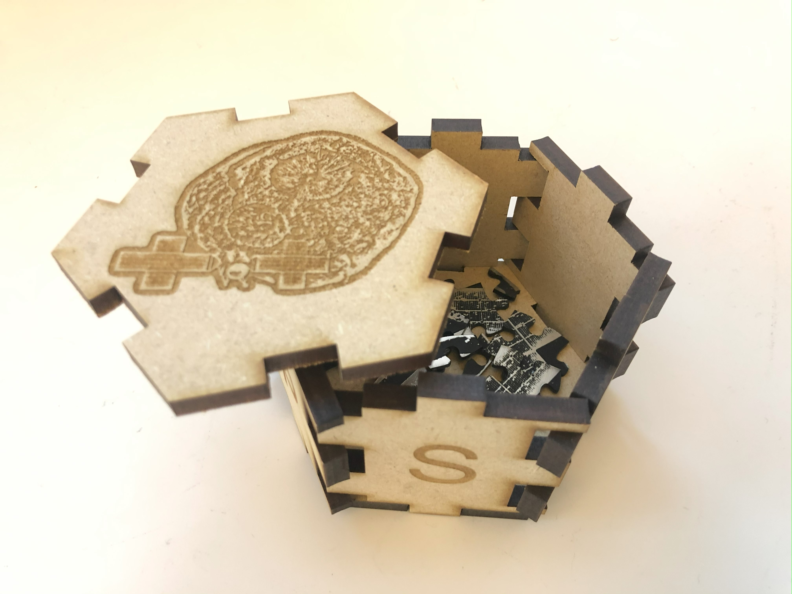
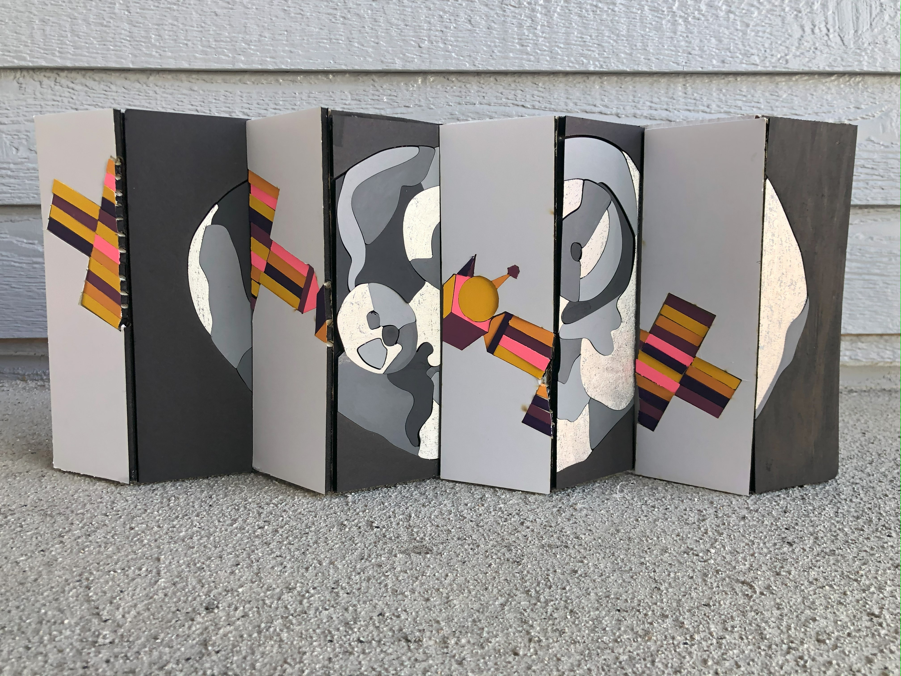

Description
Made entirely of 3D printed material, this model of the solar system, or orrery,
showcases Psyche's general position relative to all other planets in our solar system.
As demonstrated by this model, the Psyche asteroid orbits the Sun between Mars and Jupiter
within the asteroid belt. Also included is a model of the Psyche space craft and its solar
panels. The Psyche logo, asteroid and space craft were all painted with acrylic paint
after being 3D printed.
Medium: 3D printing

Description
This Psyche puzzle was inspired by the sense of curiosity and the feeling of the unknown.
Two-ply acrylic was used to highlight the assumption that the Psyche asteroid is likely rich
in metal. Both the puzzle and the box were made by laser-cut manufacturing. Each side box panel
has an engraved letter that spells out the word Psyche. The top panel features an engraved
depiction of the completed puzzle design.
Medium: Laser Cutting
Description
This diamond painting showcases the Psyche asteroid made up of thousands of individual resin
rhinestones, all of which represent the people who have worked on the Psyche mission. The shiny
finish reflects the high likelihood of the asteroid containing large amounts of metal. The
colors reflect the official NASA Psyche Mission's color palette. Each rhinestone was meticulously
placed by hand.
Medium: Diamond Painting


Description
Inspired by the concept of looking at every opportunity or challenge from different perspectives
for better understanding and discovery, this agamograph uses optical illusion to change the image
seen by the viewer in the artwork depending on their angle. From one angle, the viewer can see an
image of the Psyche asteroid and from another the viewer can see an image of the Psyche spacecraft.
Both images were made by laser cutting poster board. Each individual piece was then painted
with acrylic paint and glued onto a zigzagged piece of cardboard.
Medium: Laser Cutting